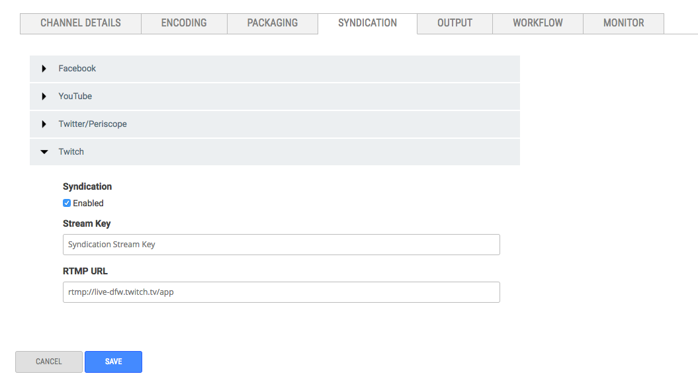

Syndicate live video to Twitch with just the stream key and RTMP URL.
Before You Start
You need to know the Stream Key and RTMP URL for the account you want to syndicate to.
Find Twitch Stream Key
Enter the following URL in a browsers.
https://www.twitch.tv/yourusername/dashboard/settings/streamkey
Replace "yourusername" with the user name for your Twitch account.
Find Twitch RTMP URL
Enter the following URL in a browser.
https://bashtech.net/twitch/ingest.php
This is a list of the ingest servers or RTMP URLs for Twittter.
Twitch Tab View

Configure Twitch Syndication